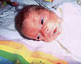
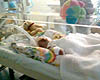
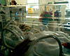
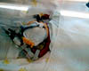
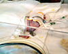

14th July 2001
Today Poppy has had her feeding tube moved. It now enters her throat through her nose instead of through her mouth. This is to stop her choking on it which she was starting to do. She seems a lot happier now that her mouth is free. She is still having 1ml of milk every two hours and also the IV feeds. Tonight she is having physiotherapy because part of her right lung has collapsed. This could lead to an infection if it is not attended to.
13th July 2001
Poppy's blood transfusion was successful and she looks a lot healthier today. She started on milk again at midday, taking 1ml every two hours. Sharon held her today, which she coped with very well.
12th July 2001
Poppy is due to have a blood transfusion tonight. She has become quite anaemic again as a result of continual blood samples being taken. It is possible that the anaemia is responsible for her current intolerance to milk. She is otherwise comfortable.
11th July 2001
Poppy is not tolerating her milk at the moment, so her feeds have been stopped for the time being. A long line has been inserted to provide a more efficient way to give Poppy her IV fluids. This has been done, because she will need to keep having the fluids until she is tolerating enough milk. Poppy's oxygen usage is still low, but thick mucus has started to line her nose and throat, due to the CPAP ventilation, which is causing her some discomfort and making the oxygen levels in her blood go up and down. She is well in herself though and seems very comfortable and relaxed.

10th July 2001
Poppy was allowed to have kangaroo care today with Sharon. She stayed out of the incubator for about an hour. Her ventilator tubes and sensor wires we draped over Sharon and she was held inside Sharon's shirt. Her oxygen requirement fell during this care and she fell fast asleep. Poppy continues to have 1ml of milk every two hours and is digesting it well. Overall she remains stable.


9th July 2001
Poppy has started on milk again today. She is currently taking 1ml every other hour, plus an IV feed of fats and nutrients to help her grow. Her oxygen requirement has decreased and she is almost breathing normal air. She is comfortable and stable.
8th July 2001
Poppy is one month old today and Daddy had his first cuddle with her. She is still doing well breathing under her own steam and the amount of oxygen she requires remains the same. Her oxygen requirement could rise dramatically if she starts to tire from breathing, especially with the Chronic Lung Disease she has. She seems to be holding her own though, so we are very encouraged. Her stomach is still distended, so she has not yet started having milk again.

